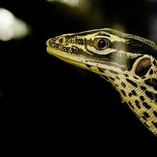

MY BLOG
Welcome to the blog of unknown
TITLE HEADING
Title description, April 7, 2014
這張照片描繪的是一幅極具詩意與寧靜氛圍的自然景觀。畫面中央是一棵生長在湖水中的孤樹，這棵樹以其獨特的姿態向右傾斜，枝葉在柔和的光線下閃耀著金黃，反射在平靜如鏡的水面上，營造出夢幻般的對稱之美。 背景是一片壯麗的山脈，在晨曦或黃昏時分的金色陽光照射下，山體的輪廓分明，光影交錯，與天空中飄浮的雲朵形成層次分明的構圖。遠處還可見一座小島，為整幅畫面增添了深度與神秘感。 這張照片可能拍攝自新西蘭著名的瓦納卡湖（Lake Wanaka），圖中這棵孤樹被稱為「That Wanaka Tree」，是當地極具代表性的攝影地標，也象徵著堅韌與孤傲之美。 整體畫面色調溫暖、構圖平衡，是一幅讓人感到平靜、沉思與敬畏自然的經典風景攝影佳作。
BLOG ENTRY
Title description, April 2, 2014
這張照片呈現出一種超現實與夢幻結合的藝術風格，畫面充滿詩意與象徵意涵。 畫面中央，一位身穿白色長裙的女性站立在一塊岩石上，背景是一片被霧氣或霜雪籠罩的森林。她的頭部與天空中的一排雲朵融合在一起，像是她的頭髮化作了雲，或她的思想正在飄浮在空中。這種構圖手法讓人產生「人與自然融合」的強烈意象。 整體色調以冷灰與淡藍為主，營造出寧靜、空靈甚至帶點孤寂的氛圍。畫面中的雲層排列整齊，如同漂浮的思緒或夢境中的片段，使觀者彷彿置身於一個超脫現實的空間。 **意境解析：** 這幅作品可能象徵著人類的思想、情感與自然界的密切聯繫，也許是在探討夢境、想像力或內心世界的無形與流動。是一張兼具視覺衝擊力與哲思深度的藝術攝影作品。 非常適合作為文學、心理學或哲學主題的插圖或創作靈感來源。
My Name
他穿著鮮紅色的T恤和黃色短褲，腳上配著黃色鞋子，正用他標誌性的圓滾滾大眼睛看向前方，一手高舉，似乎在打招呼或是招手。他那濃厚的眉毛與搞怪的表情，使人一眼就能認出這位調皮又可愛的角色。
Popular Posts
-

蛇
Sed mattis nunc -
草
Praes tinci sed -
 中草
中草
Ultricies congue
Tags
Travel New York London IKEA NORWAY DIY Ideas Baby Family News Clothing Shopping Sports Games